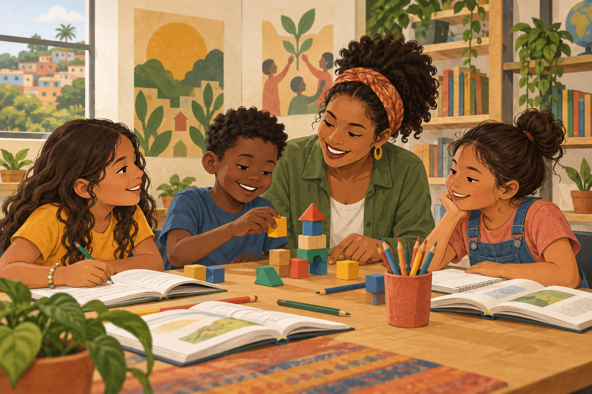
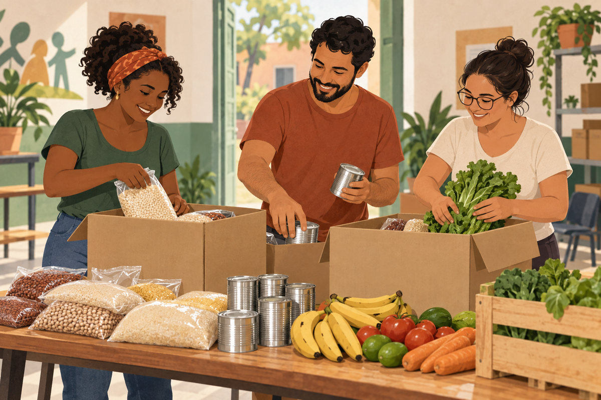

Comunidade
Cultivar também é cuidar
Encontros para plantar, compartilhar saberes e cuidar dos espaços do bairro. A participação aproxima gerações em torno de uma horta comunitária.
Educação, voluntariado e solidariedade começam com um encontro. Conheça as ideias que nos aproximam.
Incentivar a participação comunitária e ampliar oportunidades de aprendizagem e cooperação.
A ONG Comunidade é fictícia. Esta plataforma acadêmica demonstra como apresentar projetos, acolher voluntários e orientar contribuições.
Encontros para plantar, compartilhar saberes e cuidar dos espaços do bairro. A participação aproxima gerações em torno de uma horta comunitária.

Leitura, apoio à aprendizagem e oficinas criativas. Um espaço para descobrir, trocar experiências e desenvolver novas habilidades.

Uma proposta de arrecadação de alimentos para apoiar famílias. Pequenas contribuições podem se transformar em cuidado compartilhado.